文文 微笑表情 · 1024 × 1536
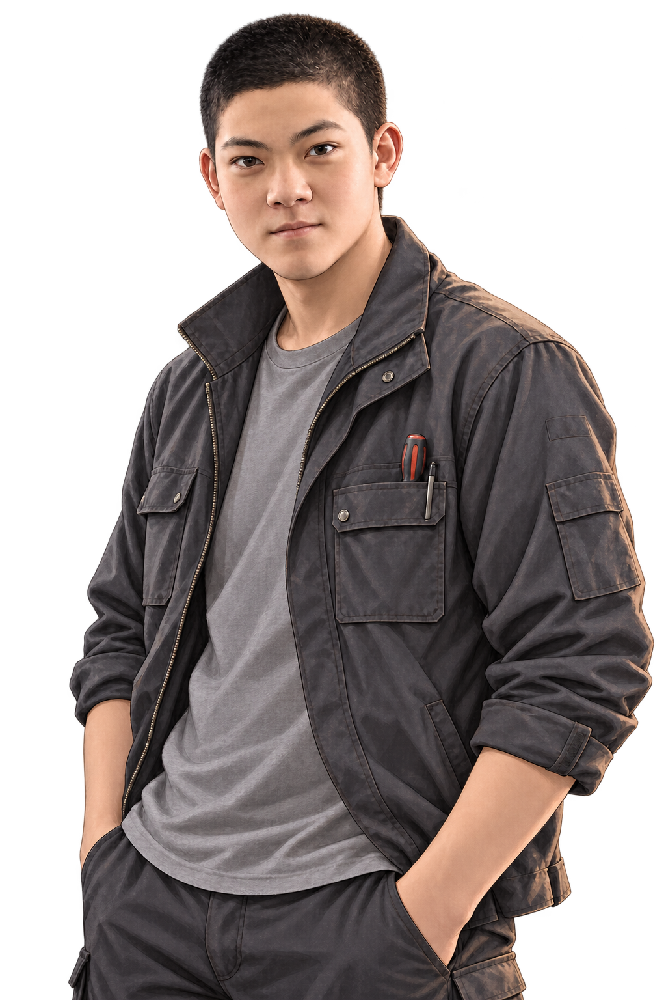
文文 认真表情 · 1024 × 1536
文文 犹豫表情 · 1024 × 1536

文文 惊讶表情 · 1024 × 1536

文文 不悦表情 · 1024 × 1536

文文 低落表情 · 1024 × 1536
文文 尴尬表情 · 1024 × 1536

文文 释然表情 · 1024 × 1536

文文 愧疚表情 · 1024 × 1536

文文 坚定表情 · 1024 × 1536
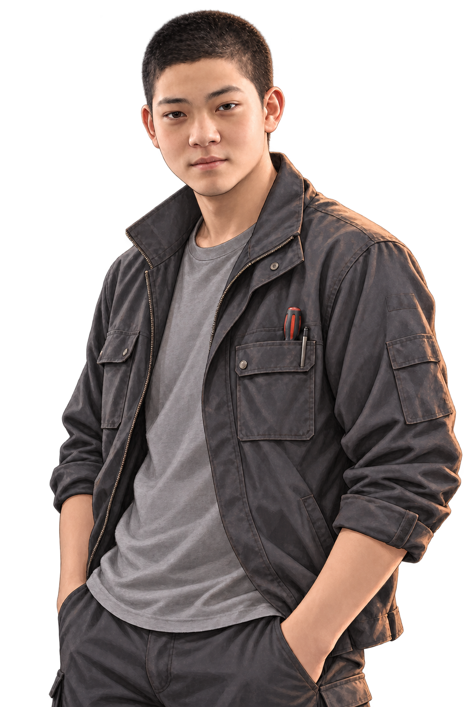
文文 疲惫表情 · 1024 × 1536

文文 苦笑表情 · 1024 × 1536

文文 招手动作 · 1024 × 1536
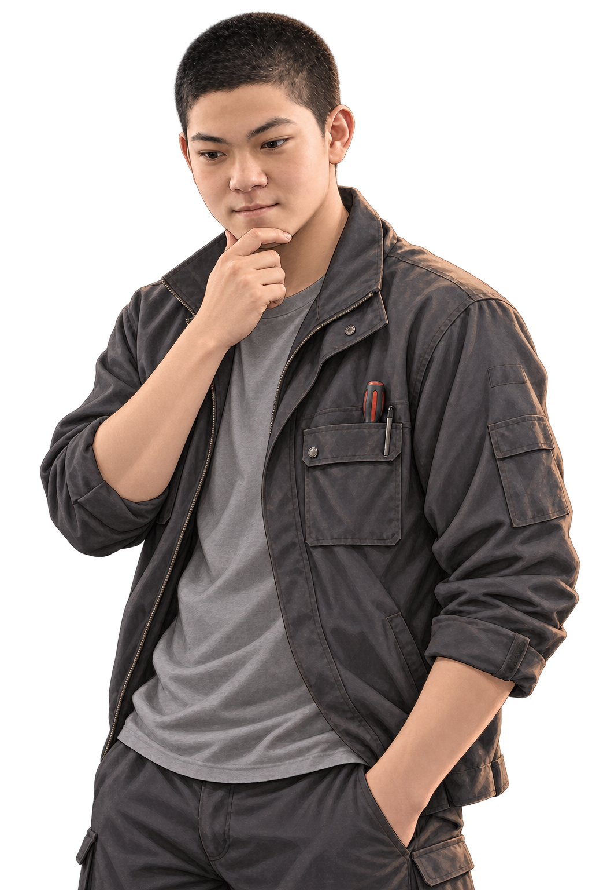
文文 思考动作 · 1024 × 1536

文文 解释动作 · 1024 × 1536
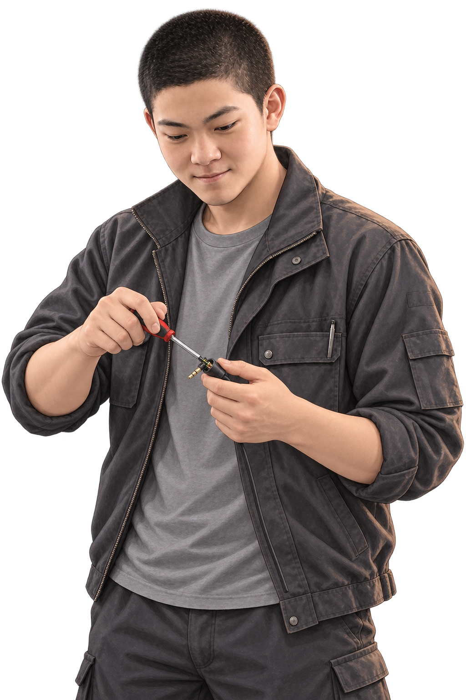
文文 低头检修动作 · 1024 × 1536
文文 查看手机动作 · 1024 × 1536

文文 抱臂倾听动作 · 1024 × 1536
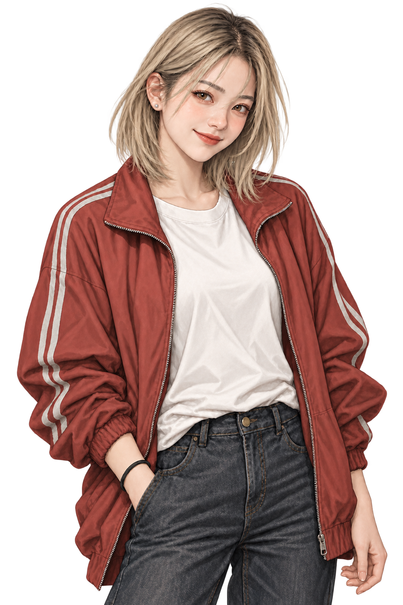
罗小满 微笑表情 · 1024 × 1536
罗小满 认真表情 · 1024 × 1536
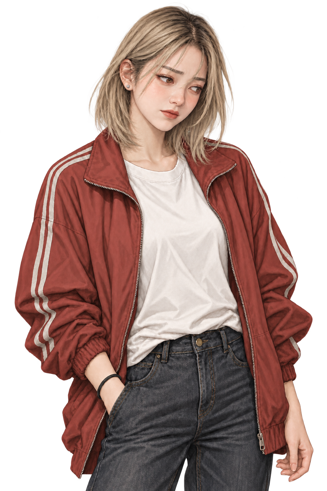
罗小满 犹豫表情 · 1024 × 1536

罗小满 惊讶表情 · 1024 × 1536

罗小满 不悦表情 · 1024 × 1536
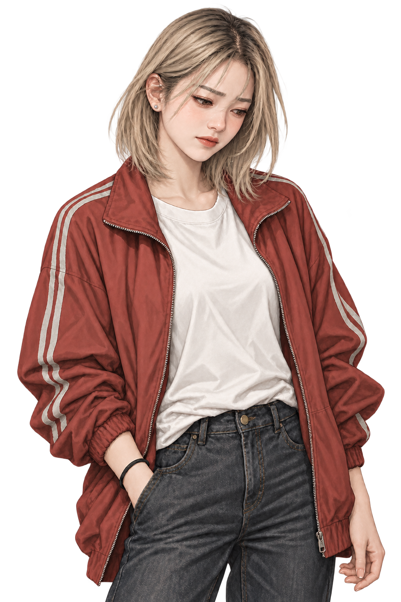
罗小满 低落表情 · 1024 × 1536

罗小满 招手动作 · 1024 × 1536

罗小满 思考动作 · 1024 × 1536

罗小满 解释动作 · 1024 × 1536
周栀 微笑表情 · 1024 × 1536
周栀 认真表情 · 1024 × 1536
周栀 犹豫表情 · 1024 × 1536

周栀 惊讶表情 · 1024 × 1536

周栀 不悦表情 · 1024 × 1536
周栀 低落表情 · 1024 × 1536
周栀 招手动作 · 1024 × 1536

周栀 思考动作 · 1024 × 1536
周栀 解释动作 · 1024 × 1536
孟遥 微笑表情 · 1024 × 1536
孟遥 认真表情 · 1024 × 1536

孟遥 犹豫表情 · 1024 × 1536
孟遥 惊讶表情 · 1024 × 1536
孟遥 不悦表情 · 1024 × 1536
孟遥 低落表情 · 1024 × 1536

孟遥 招手动作 · 1024 × 1536
孟遥 思考动作 · 1024 × 1536

孟遥 解释动作 · 1024 × 1536
叶岚 微笑表情 · 1024 × 1536

叶岚 认真表情 · 1024 × 1536
叶岚 犹豫表情 · 1024 × 1536
叶岚 惊讶表情 · 1024 × 1536

叶岚 不悦表情 · 1024 × 1536
叶岚 低落表情 · 1024 × 1536

叶岚 招手动作 · 1024 × 1536
叶岚 思考动作 · 1024 × 1536

叶岚 解释动作 · 1024 × 1536
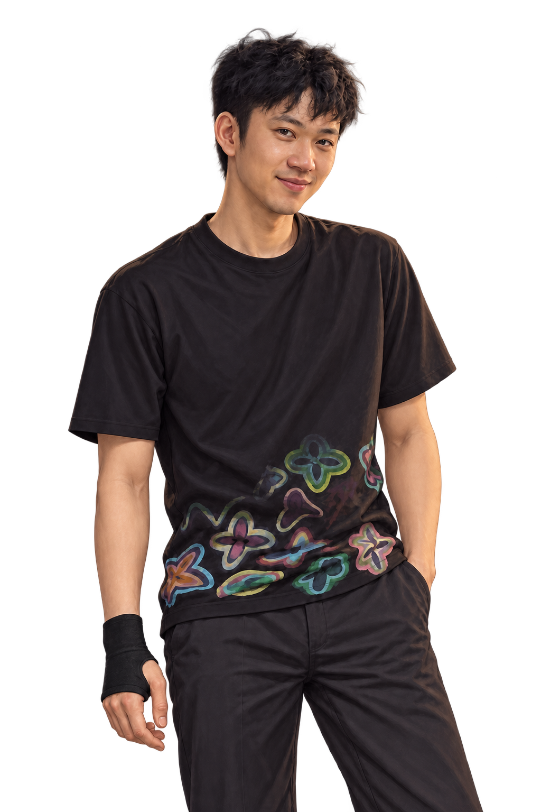
毛狼 微笑表情 · 1024 × 1536

毛狼 认真表情 · 1024 × 1536

毛狼 犹豫表情 · 1024 × 1536

毛狼 惊讶表情 · 1024 × 1536

毛狼 不悦表情 · 1024 × 1536

毛狼 低落表情 · 1024 × 1536

毛狼 招手动作 · 1024 × 1536

毛狼 思考动作 · 1024 × 1536
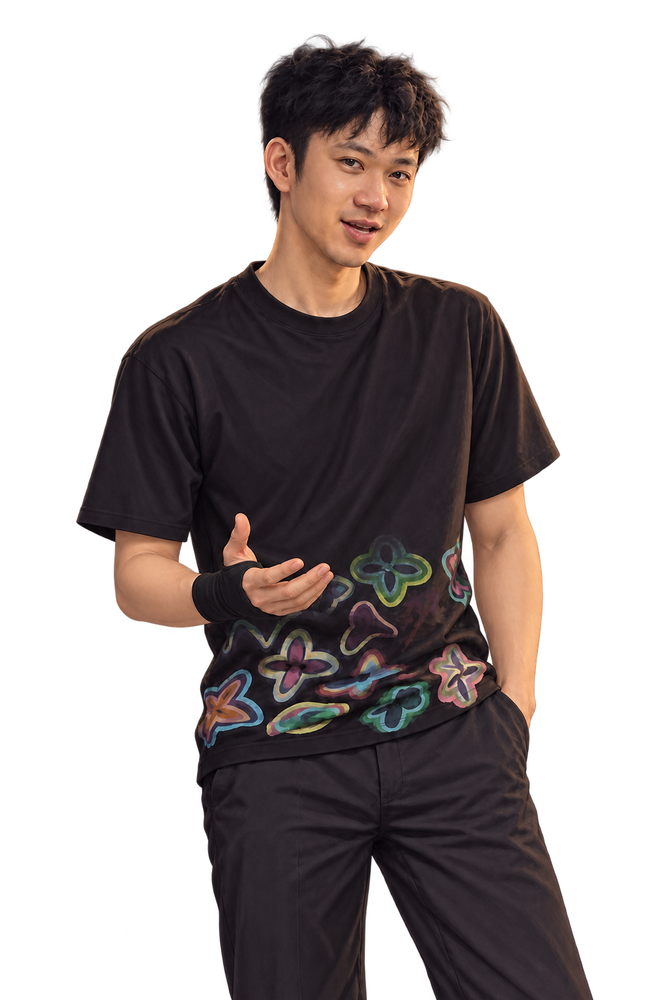
毛狼 解释动作 · 1024 × 1536
师匠 微笑表情 · 1024 × 1536

师匠 认真表情 · 1024 × 1536

师匠 犹豫表情 · 1024 × 1536
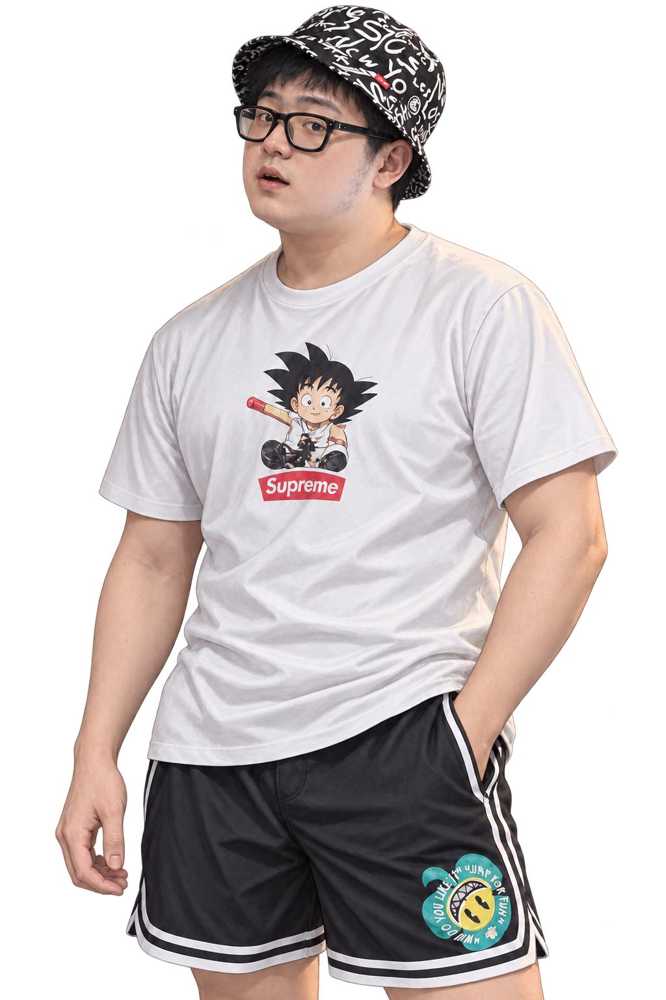
师匠 惊讶表情 · 1024 × 1536
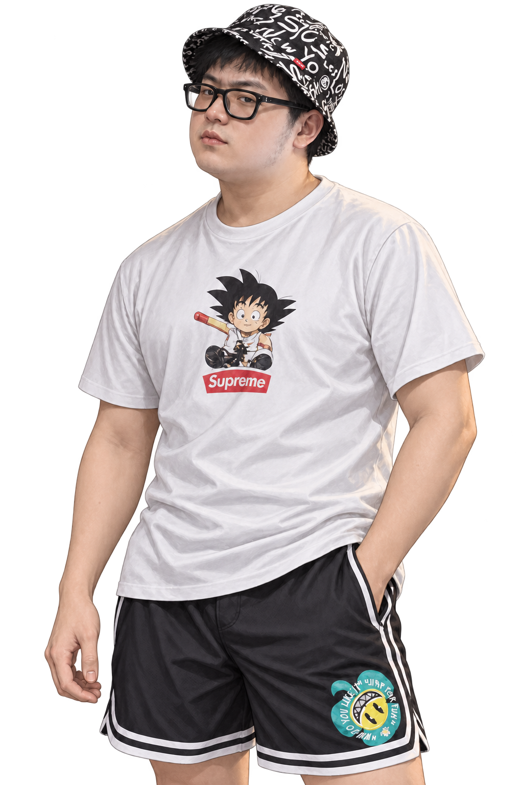
师匠 不悦表情 · 1024 × 1536

师匠 低落表情 · 1024 × 1536

师匠 招手动作 · 1024 × 1536
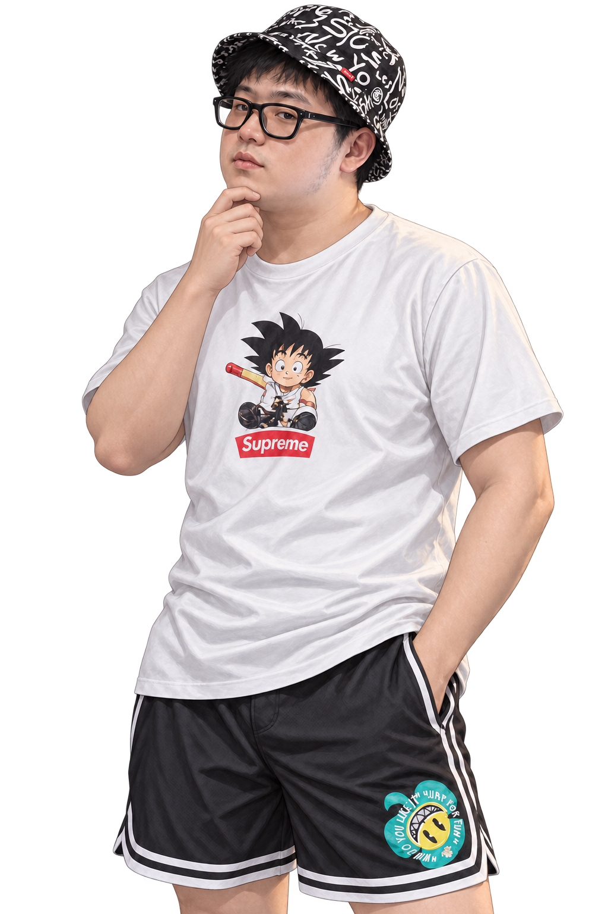
师匠 思考动作 · 1024 × 1536

师匠 解释动作 · 1024 × 1536
黄球球 微笑表情 · 1254 × 1254
黄球球 认真表情 · 1254 × 1254
黄球球 犹豫表情 · 1254 × 1254
黄球球 惊讶表情 · 1254 × 1254

黄球球 不悦表情 · 1254 × 1254

黄球球 低落表情 · 1254 × 1254
黄球球 招手动作 · 1254 × 1254
黄球球 思考动作 · 1254 × 1254

黄球球 解释动作 · 1254 × 1254